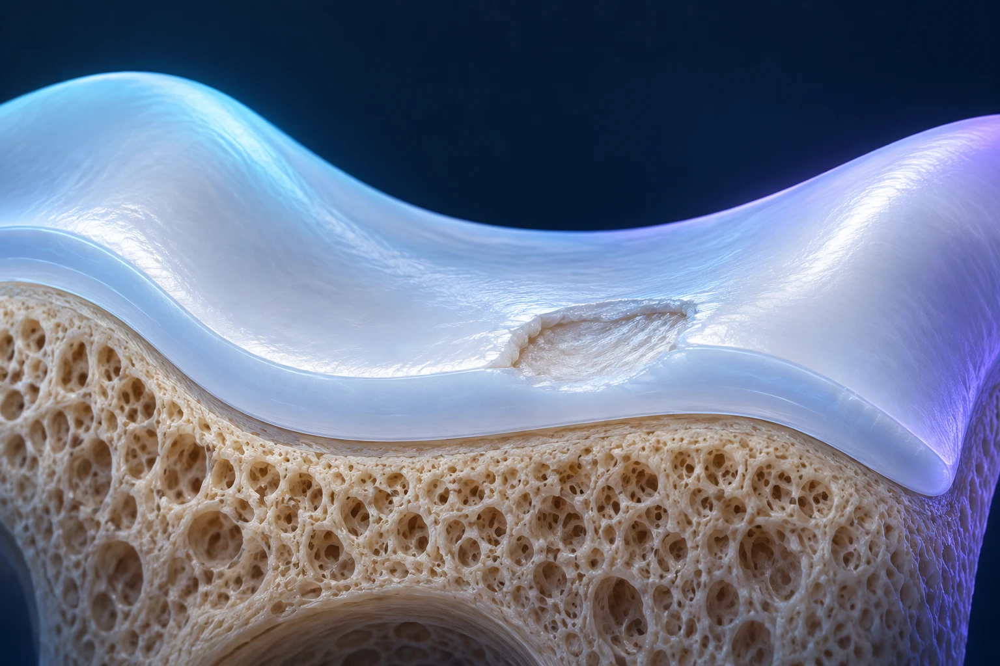

Peut-on réparer le cartilage du genou pour éviter une prothèse ?

Certaines lésions localisées du cartilage peuvent bénéficier d’un traitement de réparation ou de restauration. Cela ne signifie pas que l’on peut reconstruire un genou atteint d’arthrose diffuse. Le choix dépend de la lésion, du fonctionnement global de l’articulation et des contraintes de récupération que vous pouvez accepter.
Une lésion localisée est-elle la même chose qu’une arthrose ?
Le cartilage articulaire recouvre les extrémités osseuses et facilite leur glissement. Une lésion focale correspond à une zone abîmée bien délimitée. L’arthrose concerne un processus plus étendu, qui peut toucher plusieurs surfaces et d’autres tissus du genou.
L’image d’un revêtement de sol aide à comprendre cette différence. Réparer un défaut local sur une surface globalement préservée ne pose pas le même problème que rénover un ensemble très dégradé. Cette analogie a ses limites : le cartilage est un tissu vivant, et ses possibilités de réparation dépendent d’un environnement biologique et mécanique complexe.
Une douleur, un gonflement après l’effort ou une gêne répétée peuvent conduire à rechercher une lésion cartilagineuse. Toutefois, une anomalie découverte à l’IRM ne démontre pas à elle seule l’origine de tous vos symptômes. Le bilan doit faire le lien entre la lésion observée et le problème que vous rencontrez.
Que cherche-t-on avant de choisir un traitement ?
Le chirurgien précise la localisation, la surface et la profondeur du défaut. Il examine aussi l’os situé sous le cartilage, les ménisques, les ligaments et l’alignement du membre. Votre âge, vos activités, les interventions antérieures et vos attentes font partie de la discussion.
Cette évaluation évite de choisir une technique sur son nom ou sa nouveauté. Une réparation locale doit être envisagée dans un genou dont les autres problèmes ont été identifiés. Vous pouvez demander : « Qu’est-ce qui risque de continuer à surcharger la zone réparée ? » La réponse aide à comprendre pourquoi plusieurs gestes peuvent parfois être associés.
Les recommandations et études sur la restauration cartilagineuse portent sur des populations sélectionnées. Leurs résultats ne doivent pas être étendus automatiquement à une arthrose avancée ou à toute douleur du genou. NICE, implantation de chondrocytes et sélection des indications.
Quelles sont les options sans chirurgie ?
Une adaptation des activités, une rééducation et une prise en charge de la douleur peuvent être proposées avant une intervention. L’objectif est de retrouver une fonction acceptable et de vérifier la persistance de symptômes réellement limitants. Une amélioration clinique peut être utile même si l’image du cartilage ne redevient pas normale.
Pour évaluer cette étape, définissez une activité de référence : marcher, monter des escaliers, travailler debout ou pratiquer un loisir. Notez ce qui s’améliore, ce qui reste difficile et les éventuels gonflements. Cette description aide davantage à décider qu’une appréciation générale comme « mon genou est fragile ».
Les infiltrations ne doivent pas être présentées comme une reconstruction certaine du cartilage. Dans l’arthrose, les traitements symptomatiques et l’exercice ont leur place, mais ils ne transforment pas une atteinte diffuse en défaut local réparable. Assurance Maladie, traitements de l’arthrose du genou.
Que recouvrent les différentes techniques ?
Plusieurs familles de gestes existent. La stimulation de l’os sous-chondral, par exemple par microfractures, cherche à provoquer la formation d’un tissu de réparation. Les greffes ostéochondrales transfèrent du cartilage avec son support osseux. Le choix repose notamment sur les caractéristiques du défaut et sur le contexte du genou.
L’implantation de chondrocytes utilise des cellules du cartilage prélevées chez le patient, puis cultivées avant leur réimplantation. Certaines techniques les associent à une membrane : c’est le principe des procédures souvent regroupées sous le terme MACI. La culture cellulaire implique un parcours différent d’un geste réalisé en une seule séance. NICE, évaluation des techniques d’implantation de chondrocytes.
Le cartilage autologue fragmenté utilise de petits fragments de cartilage du patient, préparés et replacés dans le défaut. Une série publiée avec un suivi d’au moins cinq ans rapporte des résultats encourageants chez des patients sélectionnés. Son effectif limité et l’absence de comparaison randomisée ne permettent pas d’affirmer une supériorité universelle. Étude clinique sur le cartilage autologue fragmenté.
Une autre étude rétrospective a décrit une technique associant cartilage fragmenté, plasma riche en plaquettes et fibrine. Elle apporte des données supplémentaires, avec les limites propres à ce type d’étude. Le nom d’un dispositif commercial ne remplace donc ni l’analyse de l’indication ni l’explication du niveau de preuve. Série clinique publiée en 2024.
Pourquoi la récupération compte-t-elle autant ?
Une réparation cartilagineuse ne se juge pas le soir de l’opération. Les consignes d’appui, de mobilité et de reprise d’activité dépendent du geste et de sa localisation. Vous devez connaître avant l’intervention les conséquences pratiques pour votre domicile, votre travail et vos déplacements.
Demandez notamment si vous aurez besoin de béquilles, combien de temps une protection est envisagée et comment seront décidées les étapes suivantes. Le retour à un sport exigeant se prépare sur une durée longue, souvent de plusieurs mois, avec une progression définie par l’équipe. Il ne peut pas être garanti par une date unique.
Comme pour toute chirurgie, il existe des risques, dont l’infection, la raideur ou la persistance des symptômes. La réparation peut aussi rester insuffisante et nécessiter une nouvelle discussion thérapeutique. L’objectif est un bénéfice fonctionnel raisonnable ; l’absence future de prothèse ne peut pas être promise.
Comment préparer la consultation ?
Apportez vos images, les comptes rendus et les détails des traitements déjà essayés. Précisez votre objectif principal et vos contraintes de disponibilité pour la récupération. Les informations du Dr François Lozach sur la chirurgie du genou présentent les gestes proposés dans ce domaine.
Vous pouvez prendre rendez-vous avec le Dr François Lozach à Sète pour examiner les possibilités adaptées à votre genou. La question utile reste : quelle option a une chance raisonnable de vous aider, avec quelles limites et quelles contraintes ?
Ces conseils sont d’ordre général et ne remplacent pas un avis médical personnalisé.